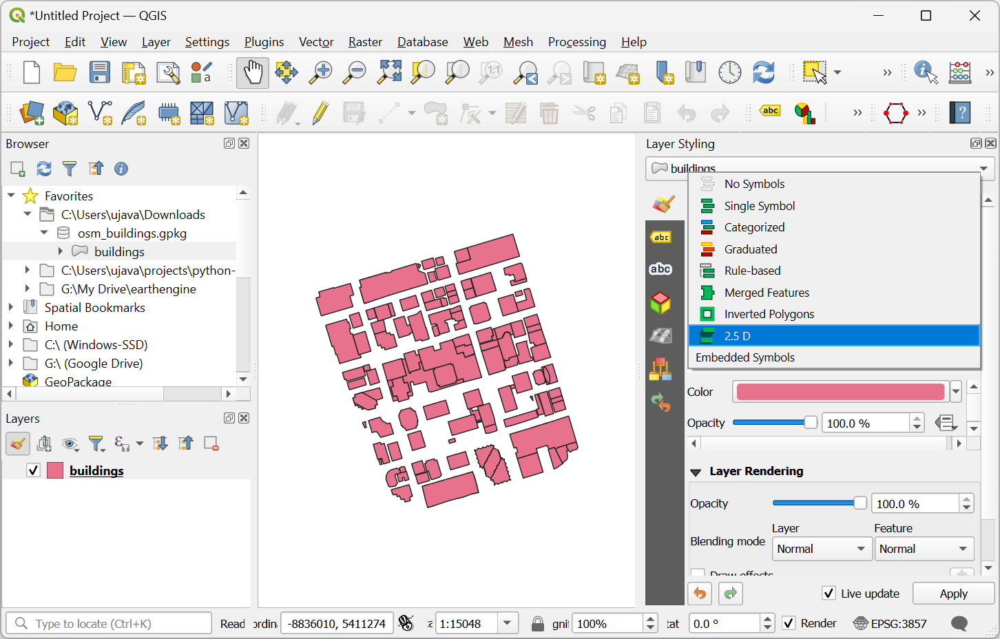
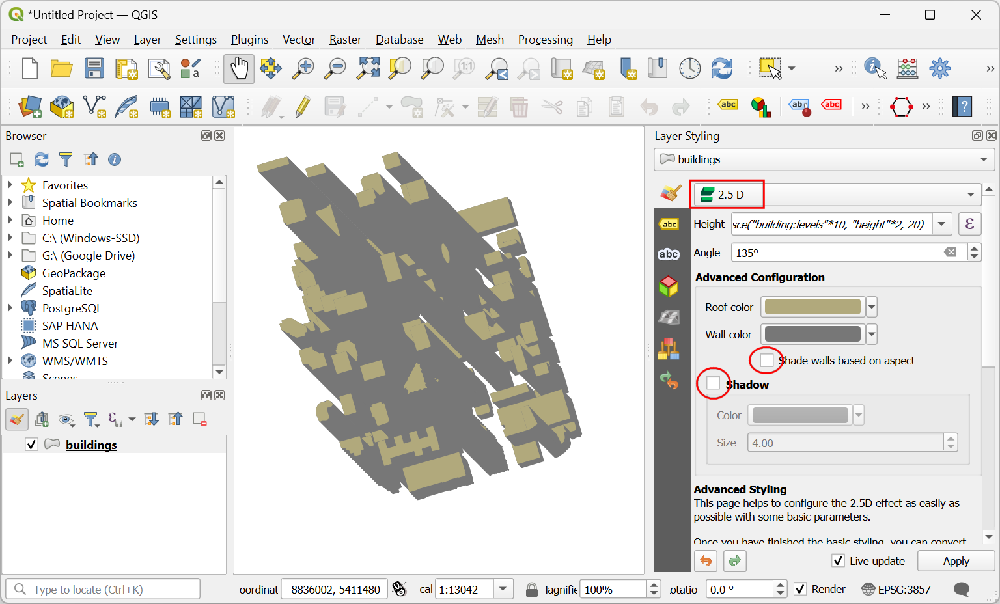
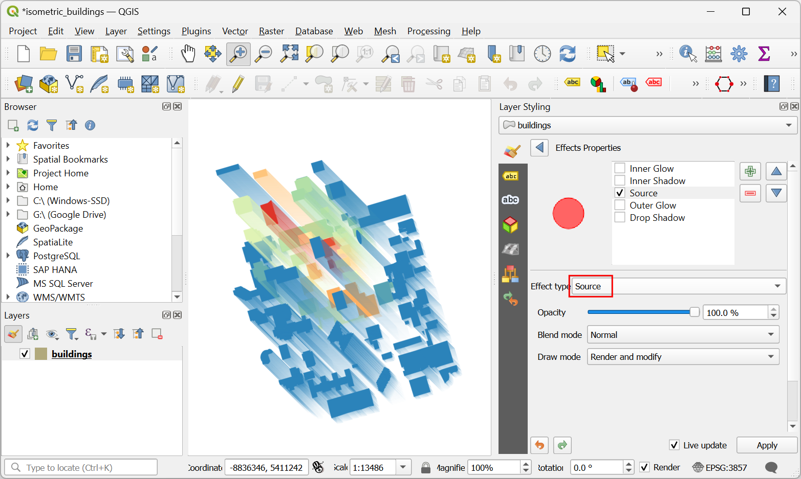
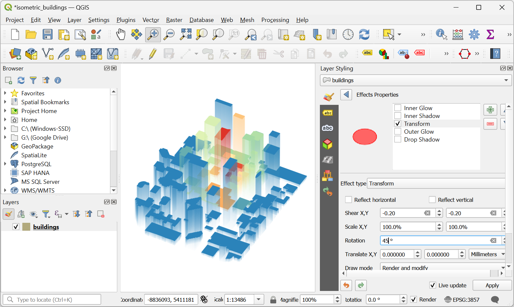

Ujaval Gandhi
Ujaval GandhiCreating Isometric Buildings (QGIS3)¶
Contributed by: Steven Kim
OpenStreetMap (OSM) is a crowd-sourced global dataset of roads, boundaries, buildings and more. It has a growing collection of building footprints across the world with many of them also having height information. While the accuracy of building height data is notoriously difficult to validate for analysis, we can use QGIS expressions to create a fun artistic isometric rendering from this data.
Overview of the task¶
We will download building footprints data from OSM for downtown Toronto and create an isometric map of building heights.

Get the data¶
We will be downloading data from OpenStreetMap(OSM) using the QuickOSM plugin. See Cercare e Scaricare Dati OpenStreetMap (QGIS3) for an introduction to the QuickOSM plugin. Once you have installed the plugin, you can proceed with the instructions below to obtain data for your region.
Nota
This tutorial is specifically designed to work with the OSM data extracted from the QuickOSM plugin. The height expression does not work with OSM planet files or data extracts with other_tags. In those cases you first need to extract building levels and heights before using them.
Open QGIS. We’ll first load a basemap. From the Browser panel, scroll down and locate tile layer. Drag and drop it to the main canvas. Zoom to your region of interest. Make sure the region is fully covered by the map extent.
Launch the QuickOSM plugin from .

In the Quick query tab, enter
buildingas the Key. Change the In to Canvas Extent. This will download all buildings in the current canvas extent. Expand the Advanced section, then unclick Points, Lines and Multilinestrings. This should leave Nodes, Ways, Relations and Multipolygons selected. Select Run query. Close the window once the map is loaded.

All the available building footprints in the canvas extent will be loaded in a new layer
building. You can continue with the data, or select a subset of the buildings. For this tutorial, we will select all buildings in your region of interest. Click the Select Features by Area or Single Click button on the Selection Toolbar. You can hold the left mouse button and draw a rectangle to select the required buildings. You can also hold the Shift key and click on the polygons to select them.

Once all the required buildings are selected, right click the
buildinglayer and select .

In the Save Vector Layer As… dialog, click the … button next to File name and browse to a folder on your computer. Enter the File name as
osm_buildings.gpkgand Layer name asbuildings. The downloaded buildings are in the CRS EPSG:4326 WGS84. This is a Geographic CRS with units in degrees. We can choose a Projected CRS which will allow us to use linear units of measurement such as meters. Click the dropdown menu for Select CRS and chooseProject CRS: EPSG:3857 - WGS84 / Pseudo-Mercator. Click OK.

The selected buildings will be reprojected and saved to a new GeoPackage file.

For convenience, you may directly download a copy of the downtown Toronto buildings from below:
Data Source [OPENSTREETMAP]
Procedure¶
Locate the
osm_buildings.gpkgfile in the QGIS Browser and expand it. Select thebuildingslayer and drag it to the canvas.
Click on Open Layer Styling Panel and switch from Single Symbol to 2.5 D.
Click the ε button next to Height.

In the Expression Builder, enter the following expression. This expression applies a multiplier to the first non-null field from
building:levelsandheight. If both are null, then a default height of 20 meters is used. Keep in mind these are exaggerated heights for visualizing at larger scales.
coalesce("building:levels"*10, "height"*2, 20)
Change the Angle to
135degrees.
Un-check the Shade walls based on aspect and Shadow. We will be applying our own colors. Click on the dropdown for selecting the renderer.
Change from 2.5 D back to Single Symbol.
In the Symbol window, notice there are two Geometry Generators, each with a Simple Fill layer type. The first Simple Fill is the top face of each block, whereas the second Simple Fill is the side face. Click on the first Simple Fill to change the color of the top face. Click on Data define override button for the Fill color and select Edit… on the menu.

This brings up the Expression Builder dialog for Fill color. Enter the following expression. This expression applies the Spectral color ramp to the data based on its distance from the map center.
ramp_color('Spectral', scale_linear( distance(@geometry,@map_extent_center), 0,@map_extent_width/6, 0,1 ) )
Click on Data define override button for the Fill color and select Copy… on the menu.

Click on Data define override button for the Stroke color and select Paste… on the menu to apply the same expression.

Now click on the second Simple Fill to change the sides. You may have to scroll down to do this. Click on the dropdown menu for the Symbol Layer Type.

Change the Symbol Layer Type from Simple Fill to Gradient Fill. The two color selectors beside the Two color represent the top and bottom colors of the gradient. Click on Data define override button for the top color.

Select Edit and enter the following expression. This is the same expression that we used for the roof color but adjusts the transparency of the color using the
set_color_part()function.set_color_part( ramp_color('Spectral', scale_linear( distance(@geometry,@map_extent_center), 0,@map_extent_width/6, 0,1 ) ), 'alpha',100)
Click on the small black triangle of the bottom color selector and check Transparent box.

Before exiting the Layer Styling Panel, let’s transform the layer to complete the isometric look. Expand the Layer Rendering section and check Draw Effects. Click on the Customize Effects star on the right.

Click on the dropdown menu next to Effect Type.
Change the Effect Type from Source to Transform. For Shear X,Y, enter -0.2 and -0.2 respectively.

Enter
45for Rotation. Exit and close the Layer Styling Panel.You should see a colorful representation of building polygons in isometric view. Feel free to experiment with the expressions for height, angle, fill colors and so on.

If you want to give feedback or share your experience with this tutorial, please comment below. (requires GitHub account)